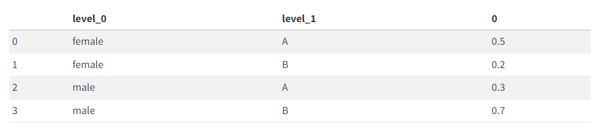

1. 강의영상
2. Imports
3. Pandas – lambda df:의 활용
A. lambda df: with indexer
- ref: https://pandas.pydata.org/docs/user_guide/indexing.html#indexing-callable
예시1 : 아래는 같은 문법이다.
| A | B | C | |
|---|---|---|---|
| 0 | -1.0 | 2.0 | NaN |
| 1 | NaN | 3.0 | 4.0 |
| 2 | 1.0 | NaN | 5.0 |
| 3 | 1.0 | 4.0 | 6.0 |
(표현1)
0 False
1 True
2 False
3 False
dtype: bool(표현2)
(표현3)
하나의 아규먼트 라는 것은 하나의 입력이라는 뜻.
df.loc[함수비슷한것:],df.loc[:,함수비슷한것],df.iloc[:, 함수비슷한것],df.iloc[함수비슷한것,:]모두 가능하다.
#
- 예시2: loc, iloc 에서도 가능함
| A | B | C | |
|---|---|---|---|
| 0 | -1.0 | 2.0 | NaN |
| 1 | NaN | 3.0 | 4.0 |
| 2 | 1.0 | NaN | 5.0 |
| 3 | 1.0 | 4.0 | 6.0 |
0 False
1 True
2 False
3 False
dtype: boolAttributeError: module 'pandas' has no attribute 'iloc'df.iloc[list(pd.Series([False, True, False, False])),:] # iloc을 쓰려면 리스트로 만들어주면된다. (pandas Series는 에러가 남)| A | B | C | |
|---|---|---|---|
| 1 | NaN | 3.0 | 4.0 |
- iloc은 True, False 형태로 이루어진 pd.Series가 들어올 경우 인덱싱이 불가능하므로 리스트로 바꿔줘야했었음..
예시3: 왜 이런 문법이 있을까? 연속적으로 dataFrame을 변화시킬 경우 유리한 테크닉
| A | B | C | |
|---|---|---|---|
| 0 | -1.0 | 2.0 | NaN |
| 1 | NaN | 3.0 | 4.0 |
| 2 | 1.0 | NaN | 5.0 |
| 3 | 1.0 | 4.0 | 6.0 |
step1: D=A+B+C를 계산
| A | B | C | D | |
|---|---|---|---|---|
| 0 | -1.0 | 2.0 | NaN | NaN |
| 1 | NaN | 3.0 | 4.0 | NaN |
| 2 | 1.0 | NaN | 5.0 | NaN |
| 3 | 1.0 | 4.0 | 6.0 | 11.0 |
| A | B | C | D | |
|---|---|---|---|---|
| 0 | -1.0 | 2.0 | NaN | NaN |
| 1 | NaN | 3.0 | 4.0 | NaN |
| 2 | 1.0 | NaN | 5.0 | NaN |
| 3 | 1.0 | 4.0 | 6.0 | 11.0 |
- row별로 결측값 개수를 세서 E라는 변수를 만들자.
1번 row에서는 결측치 2개, 2번 row에서는 결측치가 2개, 3번 row에서는 결측치가 2개, 4번 row에는 결측치가 0개…
| A | B | C | D | E | |
|---|---|---|---|---|---|
| 0 | -1.0 | 2.0 | NaN | NaN | 1 |
| 1 | NaN | 3.0 | 4.0 | NaN | 1 |
| 2 | 1.0 | NaN | 5.0 | NaN | 1 |
| 3 | 1.0 | 4.0 | 6.0 | 11.0 | 0 |
| A | B | C | D | E | |
|---|---|---|---|---|---|
| 0 | -1.0 | 2.0 | NaN | NaN | 2 |
| 1 | NaN | 3.0 | 4.0 | NaN | 2 |
| 2 | 1.0 | NaN | 5.0 | NaN | 2 |
| 3 | 1.0 | 4.0 | 6.0 | 11.0 | 0 |
step2: 여기에서 결측치의 값이 50%가 넘는 열만 고르고 싶다면?
#
B. lambda df: with assign
예시1
| A | B | C | |
|---|---|---|---|
| 0 | -1.0 | 2.0 | NaN |
| 1 | NaN | 3.0 | 4.0 |
| 2 | 1.0 | NaN | 5.0 |
| 3 | 1.0 | 4.0 | 6.0 |
| A | B | C | D | |
|---|---|---|---|---|
| 0 | -1.0 | 2.0 | NaN | NaN |
| 1 | NaN | 3.0 | 4.0 | NaN |
| 2 | 1.0 | NaN | 5.0 | NaN |
| 3 | 1.0 | 4.0 | 6.0 | 11.0 |
여기에서 결측치의 값을 row-wise하게 count하여 새로운열 E에 할당하고 싶다면?
1번 row에서는 결측치 2개, 2번 row에서는 결측칠가 2개, 3번 row에서는 결측치가 2개, 4번 row에는 결측치가 0개…
0 2
1 2
2 2
3 0
dtype: int64| A | B | C | D | E | |
|---|---|---|---|---|---|
| 0 | -1.0 | 2.0 | NaN | NaN | 2 |
| 1 | NaN | 3.0 | 4.0 | NaN | 2 |
| 2 | 1.0 | NaN | 5.0 | NaN | 2 |
| 3 | 1.0 | 4.0 | 6.0 | 11.0 | 0 |
#
예시2 – 원본데이터를 손상시키지 않으며 데이터를 변형하고 싶을때..
| A | |
|---|---|
| 0 | 12 |
| 1 | 234 |
| 2 | 3456 |
| 3 | 12345 |
| 4 | 654222 |
(풀이1) – 복사본생성 (실패)
| A | B | C | |
|---|---|---|---|
| 0 | 12 | 2.484907 | -1.286574 |
| 1 | 234 | 5.455321 | -0.564847 |
| 2 | 3456 | 8.147867 | 0.089367 |
| 3 | 12345 | 9.421006 | 0.398704 |
| 4 | 654222 | 13.391202 | 1.363350 |
| A | B | C | |
|---|---|---|---|
| 0 | 12 | 2.484907 | -1.286574 |
| 1 | 234 | 5.455321 | -0.564847 |
| 2 | 3456 | 8.147867 | 0.089367 |
| 3 | 12345 | 9.421006 | 0.398704 |
| 4 | 654222 | 13.391202 | 1.363350 |
- 이게 아닌데???
- 이게 이렇게 되는 이유는 깊은복사 얕은복사 강의 참고.
(풀이2) – 복사본생성 (성공)
| A | |
|---|---|
| 0 | 12 |
| 1 | 234 |
| 2 | 3456 |
| 3 | 12345 |
| 4 | 654222 |
| A | B | C | |
|---|---|---|---|
| 0 | 12 | 2.484907 | -1.286574 |
| 1 | 234 | 5.455321 | -0.564847 |
| 2 | 3456 | 8.147867 | 0.089367 |
| 3 | 12345 | 9.421006 | 0.398704 |
| 4 | 654222 | 13.391202 | 1.363350 |
(풀이3) – assign + lambda df: 이용
| A | B | C | |
|---|---|---|---|
| 0 | 12 | 2.484907 | -1.286574 |
| 1 | 234 | 5.455321 | -0.564847 |
| 2 | 3456 | 8.147867 | 0.089367 |
| 3 | 12345 | 9.421006 | 0.398704 |
| 4 | 654222 | 13.391202 | 1.363350 |
(풀이4) – eval 이용
| A | B | C | |
|---|---|---|---|
| 0 | 12 | 2.484907 | -1.286574 |
| 1 | 234 | 5.455321 | -0.564847 |
| 2 | 3456 | 8.147867 | 0.089367 |
| 3 | 12345 | 9.421006 | 0.398704 |
| 4 | 654222 | 13.391202 | 1.363350 |
그렇지만 eval expression에 지원하는 함수는 한계가 있다. (\(\sin\),\(\cos\)은 지원되는데 \(\tan\)은 안된다든가..)
뭐가 될지 안될지 모름…
| A | |
|---|---|
| 0 | -1.500000 |
| 1 | -1.469697 |
| 2 | -1.439394 |
| 3 | -1.409091 |
| 4 | -1.378788 |
| ... | ... |
| 95 | 1.378788 |
| 96 | 1.409091 |
| 97 | 1.439394 |
| 98 | 1.469697 |
| 99 | 1.500000 |
100 rows × 1 columns
- 안정성이 떨어진다…
- tan함수를 외부에 선언하는 방법이 있긴 함.
- 이것보다는 assign이나 lambda를 쓰는 것을 추천한다.
4. Pandas – Multi-Index의 이해
A. 원래 df, s는 딕셔너리 계열임
- 예시1: df는 dct에서 만들수 있음
| A | B | |
|---|---|---|
| 0 | 1 | 2 |
| 1 | 2 | 3 |
| 2 | 3 | 4 |
- 사실 판다스 데이터프레임이 딕셔너리로부터 나온거야… 이걸 알면 편함.
- 예시2: s도 dct에서 만들수 있음
43052 80
43053 90
43054 50
dtype: int64- 예시3: dict의 키로 올수 있는것들?
튜플로 dct를 만든다면? (key가 튜플로 옴)
43052 4 80
43053 1 90
43054 2 50
dtype: int64B. .index 혹은 .columns에 name이 있는 경우
예시1: index에 이름이 있는 경우 ['id']
43052 80
43053 90
43054 50
dtype: int64(Index(['43052', '43053', '43054'], dtype='object'),
Index(['43052', '43053', '43054'], dtype='object', name='id'))- 인덱스를 뽑을 때 인덱스를 통칭하는 타이틀을 설정할 수도 있다. (ex. name=‘id’)
#
예시2: index에 이름이 있는 경우 ['id','year']
dct = {('43052',4): 80, ('43053',1): 90, ('43054',2): 50} # (학번,학년)
s = pd.Series(dct)
s.rename_axis(['id','year'])id year
43052 4 80
43053 1 90
43054 2 50
dtype: int64MultiIndex([('43052', 4),
('43053', 1),
('43054', 2)],
names=['id', 'year'])#
예시3: 예시2가 데이터프레임이라면 이렇게 보인다
dct = {('43052',4): 80, ('43053',1): 90, ('43054',2): 50} # (학번,학년)
s = pd.Series(dct)
df = pd.DataFrame(s.rename_axis(['id','year']))
df| 0 | ||
|---|---|---|
| id | year | |
| 43052 | 4 | 80 |
| 43053 | 1 | 90 |
| 43054 | 2 | 50 |
MultiIndex([('43052', 4),
('43053', 1),
('43054', 2)],
names=['id', 'year'])- 2개의 중첩되어있는 인덱스를 가지고 있구나!
#
예시4: 심슨의 역설 – 전체
df=pd.read_csv("https://raw.githubusercontent.com/guebin/DV2022/master/posts/Simpson.csv",index_col=0,header=[0,1])\
.stack().stack().reset_index()\
.rename({'level_0':'department','level_1':'result','level_2':'gender',0:'count'},axis=1).pivot_table(index='gender', columns='result', values='count', aggfunc=sum)
df| result | fail | pass |
|---|---|---|
| gender | ||
| female | 1063 | 772 |
| male | 1291 | 1400 |
- female, male은 인덱스, gender는 인덱스의 타이틀, fail, pass는 컬럼이름. result는 컬럼 이름에 대한 타이틀.
(Index(['female', 'male'], dtype='object', name='gender'),
Index(['fail', 'pass'], dtype='object', name='result'))1열과 2열을 더하고 싶다면? 단순히 아래와 같이 하면 된다. (여기에서 gender,result는 각각 index 의 이름, columns의 이름일 뿐이므로 신경쓸 필요 없음)
- 그냥 이거임.
#
예시5: 심슨의 역설 – 학과별
df = pd.read_csv("https://raw.githubusercontent.com/guebin/DV2022/master/posts/Simpson.csv",index_col=0,header=[0,1])\
.stack().stack().reset_index()\
.rename({'level_0':'department','level_1':'result','level_2':'gender',0:'count'},axis=1).pivot_table(index=['gender','department'], columns='result',values='count',aggfunc=sum)
df | result | fail | pass | |
|---|---|---|---|
| gender | department | ||
| female | A | 19 | 89 |
| B | 7 | 18 | |
| C | 391 | 202 | |
| D | 244 | 131 | |
| E | 299 | 94 | |
| F | 103 | 238 | |
| male | A | 314 | 511 |
| B | 208 | 352 | |
| C | 204 | 121 | |
| D | 279 | 138 | |
| E | 137 | 54 | |
| F | 149 | 224 |
(MultiIndex([('female', 'A'),
('female', 'B'),
('female', 'C'),
('female', 'D'),
('female', 'E'),
('female', 'F'),
( 'male', 'A'),
( 'male', 'B'),
( 'male', 'C'),
( 'male', 'D'),
( 'male', 'E'),
( 'male', 'F')],
names=['gender', 'department']),
Index(['fail', 'pass'], dtype='object', name='result'))학과별 합격률을 알고 싶다면?
| result | fail | pass | rate | |
|---|---|---|---|---|
| gender | department | |||
| female | A | 19 | 89 | 0.824074 |
| B | 7 | 18 | 0.720000 | |
| C | 391 | 202 | 0.340641 | |
| D | 244 | 131 | 0.349333 | |
| E | 299 | 94 | 0.239186 | |
| F | 103 | 238 | 0.697947 | |
| male | A | 314 | 511 | 0.619394 |
| B | 208 | 352 | 0.628571 | |
| C | 204 | 121 | 0.372308 | |
| D | 279 | 138 | 0.330935 | |
| E | 137 | 54 | 0.282723 | |
| F | 149 | 224 | 0.600536 |
gender department
female A 108
B 25
C 593
D 375
E 393
F 341
male A 825
B 560
C 325
D 417
E 191
F 373
dtype: int64#
5. Pandas – tidydata
A. tidydata의 개념
- 아래의 자료는 불리하다. (뭐가??)
df = pd.read_csv("https://raw.githubusercontent.com/guebin/DV2022/master/posts/Simpson.csv",index_col=0,header=[0,1])\
.stack().stack().reset_index()\
.rename({'level_0':'department','level_1':'result','level_2':'gender',0:'count'},axis=1).pivot_table(index=['gender','department'], columns='result',values='count',aggfunc=sum)
df | result | fail | pass | |
|---|---|---|---|
| gender | department | ||
| female | A | 19 | 89 |
| B | 7 | 18 | |
| C | 391 | 202 | |
| D | 244 | 131 | |
| E | 299 | 94 | |
| F | 103 | 238 | |
| male | A | 314 | 511 |
| B | 208 | 352 | |
| C | 204 | 121 | |
| D | 279 | 138 | |
| E | 137 | 54 | |
| F | 149 | 224 |
- 이건 다루기 쉬운 형태의 데이터가 아니다.
| gender | department | result | 0 | |
|---|---|---|---|---|
| 0 | female | A | fail | 19 |
| 1 | female | A | pass | 89 |
| 12 | male | A | fail | 314 |
| 13 | male | A | pass | 511 |
- 가정1: 만약에 A학과에 해당하는 결과만 뽑고 싶다면? –> departmet가 column으로 있어야함..
- 가정2: 이 데이터를 바탕으로 합격한사람만 bar plot을 그리고 싶다면? –> department, gender, pass 가 column으로 있어야함..
- tidydata 정의: https://r4ds.had.co.nz/tidy-data.html
- Each variable must have its own column.
- Each observation must have its own row.
- Each value must have its own cell.
multi-index가 있으면 무조건 tidydata가 아니다.
B. tidydata가 아닌 예시
예시1 – MultiIndex 구조를 가지면 무조건 tidydata가 아니다.
df = pd.read_csv("https://raw.githubusercontent.com/guebin/DV2022/master/posts/Simpson.csv",index_col=0,header=[0,1])\
.stack().stack().reset_index()\
.rename({'level_0':'department','level_1':'result','level_2':'gender',0:'count'},axis=1).pivot_table(index=['gender','department'], columns='result',values='count',aggfunc=sum)
df| result | fail | pass | |
|---|---|---|---|
| gender | department | ||
| female | A | 19 | 89 |
| B | 7 | 18 | |
| C | 391 | 202 | |
| D | 244 | 131 | |
| E | 299 | 94 | |
| F | 103 | 238 | |
| male | A | 314 | 511 |
| B | 208 | 352 | |
| C | 204 | 121 | |
| D | 279 | 138 | |
| E | 137 | 54 | |
| F | 149 | 224 |
- 이건 tidydata가 아니고 // 단순하게 생각하면, 멀티인덱스가 있으니까 tidydata가 아니야.
| gender | department | result | applicant_count | |
|---|---|---|---|---|
| 0 | female | A | fail | 19 |
| 1 | female | A | pass | 89 |
| 2 | female | B | fail | 7 |
| 3 | female | B | pass | 18 |
| 4 | female | C | fail | 391 |
| 5 | female | C | pass | 202 |
| 6 | female | D | fail | 244 |
| 7 | female | D | pass | 131 |
| 8 | female | E | fail | 299 |
| 9 | female | E | pass | 94 |
| 10 | female | F | fail | 103 |
| 11 | female | F | pass | 238 |
| 12 | male | A | fail | 314 |
| 13 | male | A | pass | 511 |
| 14 | male | B | fail | 208 |
| 15 | male | B | pass | 352 |
| 16 | male | C | fail | 204 |
| 17 | male | C | pass | 121 |
| 18 | male | D | fail | 279 |
| 19 | male | D | pass | 138 |
| 20 | male | E | fail | 137 |
| 21 | male | E | pass | 54 |
| 22 | male | F | fail | 149 |
| 23 | male | F | pass | 224 |
- 이것이 tidydata
- 구분하는 방법1: 직관에 의한 설명
- query쓰기 불편: 남성지원자만 뽑고 싶다면?, 학과A만 뽑고싶다면? 탈락한지원자만 뽑고싶다면? 학과A에서 탈락한 지원자만 뽑고싶다면??
- 시각화하기 불편:
- 하여튼 다루기 불편해..
- 구분하는 방법2: 정의에 의한 설명
df는 원칙 1에 위배된다. (왜냐하면gender,department,result,applicant_count에 해당하는 변수는 하나의 컬럼을 차지하지 못함)df는 원칙 2에 위배된다. (왜냐하면 하나의 행에 2개의applicant_countobservation이 존재함)
# 우리가 다루기 편리한 자료의 형태를 tidydata라고 생각하자. (query를 쓰기 편하고, 시각화하기 편한 데이터…)
예시2 – 아래의 자료는 tidydata가 아니다.
df=pd.read_csv("https://raw.githubusercontent.com/guebin/DV2022/master/posts/Simpson.csv",index_col=0,header=[0,1])\
.stack().stack().reset_index()\
.rename({'level_0':'department','level_1':'result','level_2':'gender',0:'count'},axis=1).pivot_table(index='gender', columns='result', values='count', aggfunc=sum)\
.assign(pass_fail = lambda df: list(map(lambda x,y: (y,x),df['fail'],df['pass']))).drop(['fail','pass'],axis=1).reset_index()
df| result | gender | pass_fail |
|---|---|---|
| 0 | female | (772, 1063) |
| 1 | male | (1400, 1291) |
- 이
df는 원칙 3에 위배된다.
#
# 예시3 – wide df (넓은형태의 df)
| Date | Samsung | Apple | Huawei | Xiaomi | Oppo | Mobicel | Motorola | LG | Others | Realme | Nokia | Lenovo | OnePlus | Sony | Asus | ||
|---|---|---|---|---|---|---|---|---|---|---|---|---|---|---|---|---|---|
| 0 | 2019-10 | 461 | 324 | 136 | 109 | 76 | 81 | 43 | 37 | 135 | 28 | 39 | 14 | 22 | 17 | 20 | 17 |
| 1 | 2019-11 | 461 | 358 | 167 | 141 | 86 | 61 | 29 | 36 | 141 | 27 | 29 | 20 | 23 | 10 | 19 | 27 |
| 2 | 2019-12 | 426 | 383 | 143 | 105 | 53 | 45 | 51 | 48 | 129 | 30 | 20 | 26 | 28 | 18 | 18 | 19 |
| 3 | 2020-01 | 677 | 494 | 212 | 187 | 110 | 79 | 65 | 49 | 158 | 23 | 13 | 19 | 19 | 22 | 27 | 22 |
| 4 | 2020-02 | 593 | 520 | 217 | 195 | 112 | 67 | 62 | 71 | 157 | 25 | 18 | 16 | 24 | 18 | 23 | 20 |
| 5 | 2020-03 | 637 | 537 | 246 | 187 | 92 | 66 | 59 | 67 | 145 | 21 | 16 | 24 | 18 | 31 | 22 | 14 |
| 6 | 2020-04 | 647 | 583 | 222 | 154 | 98 | 59 | 48 | 64 | 113 | 20 | 23 | 25 | 19 | 19 | 23 | 21 |
| 7 | 2020-05 | 629 | 518 | 192 | 176 | 91 | 87 | 50 | 66 | 150 | 43 | 27 | 15 | 18 | 19 | 19 | 13 |
| 8 | 2020-06 | 663 | 552 | 209 | 185 | 93 | 69 | 54 | 60 | 140 | 39 | 16 | 16 | 17 | 29 | 25 | 16 |
| 9 | 2020-07 | 599 | 471 | 214 | 193 | 89 | 78 | 65 | 59 | 130 | 40 | 27 | 25 | 21 | 18 | 18 | 12 |
| 10 | 2020-08 | 615 | 567 | 204 | 182 | 105 | 82 | 62 | 42 | 129 | 47 | 16 | 23 | 21 | 27 | 23 | 20 |
| 11 | 2020-09 | 621 | 481 | 230 | 220 | 102 | 88 | 56 | 49 | 143 | 54 | 14 | 15 | 17 | 15 | 19 | 15 |
| 12 | 2020-10 | 637 | 555 | 232 | 203 | 90 | 52 | 63 | 49 | 140 | 33 | 17 | 20 | 22 | 9 | 22 | 21 |
- 이건 tidydata 가 아니고
- long form
tidydata = df.melt(id_vars='Date').assign(Date = lambda _df: _df.Date.apply(pd.to_datetime))
tidydata| Date | variable | value | |
|---|---|---|---|
| 0 | 2019-10-01 | Samsung | 461 |
| 1 | 2019-11-01 | Samsung | 461 |
| 2 | 2019-12-01 | Samsung | 426 |
| 3 | 2020-01-01 | Samsung | 677 |
| 4 | 2020-02-01 | Samsung | 593 |
| ... | ... | ... | ... |
| 203 | 2020-06-01 | Asus | 16 |
| 204 | 2020-07-01 | Asus | 12 |
| 205 | 2020-08-01 | Asus | 20 |
| 206 | 2020-09-01 | Asus | 15 |
| 207 | 2020-10-01 | Asus | 21 |
208 rows × 3 columns
- 이건 tidydata 이다.
- df를 가지고 아래와 같은 그림을 그릴 수 있겠어?
–> 그럼 멀티인덱스가 있으면 멀티인덱스를 깨야하고, 와이드폼으로 되어있으면 롱 폼으로 바꿔야겠지?
6. Pandas – melt/stack
A. reset_index()
중첩구조를 가지는 series일 경우
.reset_index()를 사용하면 쉽게 tidydata를 얻을 수 있다.
- 예시1
43052 80
43053 90
43054 50
dtype: int64- 예시2
43052 4 80
43053 1 90
43054 2 50
dtype: int64- 예시3
df=pd.read_csv("https://raw.githubusercontent.com/guebin/DV2022/master/posts/Simpson.csv",index_col=0,header=[0,1]).stack().stack()
dfA fail female 19
male 314
pass female 89
male 511
B fail female 7
male 208
pass female 18
male 352
C fail female 391
male 204
pass female 202
male 121
D fail female 244
male 279
pass female 131
male 138
E fail female 299
male 137
pass female 94
male 54
F fail female 103
male 149
pass female 238
male 224
dtype: int64- 인덱스가 3개가 중첩된 멀티인덱스
| level_0 | level_1 | level_2 | 0 | |
|---|---|---|---|---|
| 0 | A | fail | female | 19 |
| 1 | A | fail | male | 314 |
| 2 | A | pass | female | 89 |
| 3 | A | pass | male | 511 |
| 4 | B | fail | female | 7 |
| 5 | B | fail | male | 208 |
| 6 | B | pass | female | 18 |
| 7 | B | pass | male | 352 |
| 8 | C | fail | female | 391 |
| 9 | C | fail | male | 204 |
| 10 | C | pass | female | 202 |
| 11 | C | pass | male | 121 |
| 12 | D | fail | female | 244 |
| 13 | D | fail | male | 279 |
| 14 | D | pass | female | 131 |
| 15 | D | pass | male | 138 |
| 16 | E | fail | female | 299 |
| 17 | E | fail | male | 137 |
| 18 | E | pass | female | 94 |
| 19 | E | pass | male | 54 |
| 20 | F | fail | female | 103 |
| 21 | F | fail | male | 149 |
| 22 | F | pass | female | 238 |
| 23 | F | pass | male | 224 |
- 예시4 – .reset_index() 는 말그대로 index를 reset 하는 명령어, 꼭 pd.Series에만 쓰는건 아니다.
df=pd.read_csv("https://raw.githubusercontent.com/guebin/DV2022/master/posts/Simpson.csv",index_col=0,header=[0,1]).stack()
df| female | male | ||
|---|---|---|---|
| A | fail | 19 | 314 |
| pass | 89 | 511 | |
| B | fail | 7 | 208 |
| pass | 18 | 352 | |
| C | fail | 391 | 204 |
| pass | 202 | 121 | |
| D | fail | 244 | 279 |
| pass | 131 | 138 | |
| E | fail | 299 | 137 |
| pass | 94 | 54 | |
| F | fail | 103 | 149 |
| pass | 238 | 224 |
| level_0 | level_1 | female | male | |
|---|---|---|---|---|
| 0 | A | fail | 19 | 314 |
| 1 | A | pass | 89 | 511 |
| 2 | B | fail | 7 | 208 |
| 3 | B | pass | 18 | 352 |
| 4 | C | fail | 391 | 204 |
| 5 | C | pass | 202 | 121 |
| 6 | D | fail | 244 | 279 |
| 7 | D | pass | 131 | 138 |
| 8 | E | fail | 299 | 137 |
| 9 | E | pass | 94 | 54 |
| 10 | F | fail | 103 | 149 |
| 11 | F | pass | 238 | 224 |
- 어떤 시리즈나 데이터프레임에
reset_index()를 취하면 이런식으로 된다.
B. melt()
wide data를 다루는 데 원툴.
# 예시1: 아래의 자료(wide form)를 tidydata로 만들라.
| Date | Samsung | Apple | Huawei | Xiaomi | Oppo | Mobicel | Motorola | LG | Others | Realme | Nokia | Lenovo | OnePlus | Sony | Asus | ||
|---|---|---|---|---|---|---|---|---|---|---|---|---|---|---|---|---|---|
| 0 | 2019-10 | 461 | 324 | 136 | 109 | 76 | 81 | 43 | 37 | 135 | 28 | 39 | 14 | 22 | 17 | 20 | 17 |
| 1 | 2019-11 | 461 | 358 | 167 | 141 | 86 | 61 | 29 | 36 | 141 | 27 | 29 | 20 | 23 | 10 | 19 | 27 |
| 2 | 2019-12 | 426 | 383 | 143 | 105 | 53 | 45 | 51 | 48 | 129 | 30 | 20 | 26 | 28 | 18 | 18 | 19 |
| 3 | 2020-01 | 677 | 494 | 212 | 187 | 110 | 79 | 65 | 49 | 158 | 23 | 13 | 19 | 19 | 22 | 27 | 22 |
| 4 | 2020-02 | 593 | 520 | 217 | 195 | 112 | 67 | 62 | 71 | 157 | 25 | 18 | 16 | 24 | 18 | 23 | 20 |
| 5 | 2020-03 | 637 | 537 | 246 | 187 | 92 | 66 | 59 | 67 | 145 | 21 | 16 | 24 | 18 | 31 | 22 | 14 |
| 6 | 2020-04 | 647 | 583 | 222 | 154 | 98 | 59 | 48 | 64 | 113 | 20 | 23 | 25 | 19 | 19 | 23 | 21 |
| 7 | 2020-05 | 629 | 518 | 192 | 176 | 91 | 87 | 50 | 66 | 150 | 43 | 27 | 15 | 18 | 19 | 19 | 13 |
| 8 | 2020-06 | 663 | 552 | 209 | 185 | 93 | 69 | 54 | 60 | 140 | 39 | 16 | 16 | 17 | 29 | 25 | 16 |
| 9 | 2020-07 | 599 | 471 | 214 | 193 | 89 | 78 | 65 | 59 | 130 | 40 | 27 | 25 | 21 | 18 | 18 | 12 |
| 10 | 2020-08 | 615 | 567 | 204 | 182 | 105 | 82 | 62 | 42 | 129 | 47 | 16 | 23 | 21 | 27 | 23 | 20 |
| 11 | 2020-09 | 621 | 481 | 230 | 220 | 102 | 88 | 56 | 49 | 143 | 54 | 14 | 15 | 17 | 15 | 19 | 15 |
| 12 | 2020-10 | 637 | 555 | 232 | 203 | 90 | 52 | 63 | 49 | 140 | 33 | 17 | 20 | 22 | 9 | 22 | 21 |
(풀이1) .melt() – 실패
| variable | value | |
|---|---|---|
| 0 | Date | 2019-10 |
| 1 | Date | 2019-11 |
| 2 | Date | 2019-12 |
| 3 | Date | 2020-01 |
| 4 | Date | 2020-02 |
| ... | ... | ... |
| 216 | Asus | 16 |
| 217 | Asus | 12 |
| 218 | Asus | 20 |
| 219 | Asus | 15 |
| 220 | Asus | 21 |
221 rows × 2 columns
(풀이2) .melt(id_vars=) – 성공
| Date | variable | value | |
|---|---|---|---|
| 0 | 2019-10 | Samsung | 461 |
| 1 | 2019-11 | Samsung | 461 |
| 2 | 2019-12 | Samsung | 426 |
| 3 | 2020-01 | Samsung | 677 |
| 4 | 2020-02 | Samsung | 593 |
| ... | ... | ... | ... |
| 203 | 2020-06 | Asus | 16 |
| 204 | 2020-07 | Asus | 12 |
| 205 | 2020-08 | Asus | 20 |
| 206 | 2020-09 | Asus | 15 |
| 207 | 2020-10 | Asus | 21 |
208 rows × 3 columns
- 컬럼들을 녹여서 밑으로 쫙 흘러내리게!
#
C. stack() + reset_index()
제 최애테크닉: DataFrame을 MultiIndex를 가지는 Series로 “일부러” 변환하고 reset_index()를 시킴
# 예시1: 아래의 자료를 tidydata로 만들라.
| Date | Samsung | Apple | Huawei | Xiaomi | Oppo | Mobicel | Motorola | LG | Others | Realme | Nokia | Lenovo | OnePlus | Sony | Asus | ||
|---|---|---|---|---|---|---|---|---|---|---|---|---|---|---|---|---|---|
| 0 | 2019-10 | 461 | 324 | 136 | 109 | 76 | 81 | 43 | 37 | 135 | 28 | 39 | 14 | 22 | 17 | 20 | 17 |
| 1 | 2019-11 | 461 | 358 | 167 | 141 | 86 | 61 | 29 | 36 | 141 | 27 | 29 | 20 | 23 | 10 | 19 | 27 |
| 2 | 2019-12 | 426 | 383 | 143 | 105 | 53 | 45 | 51 | 48 | 129 | 30 | 20 | 26 | 28 | 18 | 18 | 19 |
| 3 | 2020-01 | 677 | 494 | 212 | 187 | 110 | 79 | 65 | 49 | 158 | 23 | 13 | 19 | 19 | 22 | 27 | 22 |
| 4 | 2020-02 | 593 | 520 | 217 | 195 | 112 | 67 | 62 | 71 | 157 | 25 | 18 | 16 | 24 | 18 | 23 | 20 |
| 5 | 2020-03 | 637 | 537 | 246 | 187 | 92 | 66 | 59 | 67 | 145 | 21 | 16 | 24 | 18 | 31 | 22 | 14 |
| 6 | 2020-04 | 647 | 583 | 222 | 154 | 98 | 59 | 48 | 64 | 113 | 20 | 23 | 25 | 19 | 19 | 23 | 21 |
| 7 | 2020-05 | 629 | 518 | 192 | 176 | 91 | 87 | 50 | 66 | 150 | 43 | 27 | 15 | 18 | 19 | 19 | 13 |
| 8 | 2020-06 | 663 | 552 | 209 | 185 | 93 | 69 | 54 | 60 | 140 | 39 | 16 | 16 | 17 | 29 | 25 | 16 |
| 9 | 2020-07 | 599 | 471 | 214 | 193 | 89 | 78 | 65 | 59 | 130 | 40 | 27 | 25 | 21 | 18 | 18 | 12 |
| 10 | 2020-08 | 615 | 567 | 204 | 182 | 105 | 82 | 62 | 42 | 129 | 47 | 16 | 23 | 21 | 27 | 23 | 20 |
| 11 | 2020-09 | 621 | 481 | 230 | 220 | 102 | 88 | 56 | 49 | 143 | 54 | 14 | 15 | 17 | 15 | 19 | 15 |
| 12 | 2020-10 | 637 | 555 | 232 | 203 | 90 | 52 | 63 | 49 | 140 | 33 | 17 | 20 | 22 | 9 | 22 | 21 |
Date
2019-10 Samsung 461
Apple 324
Huawei 136
Xiaomi 109
Oppo 76
...
2020-10 Nokia 20
Lenovo 22
OnePlus 9
Sony 22
Asus 21
Length: 208, dtype: int64| Date | level_1 | 0 | |
|---|---|---|---|
| 0 | 2019-10 | Samsung | 461 |
| 1 | 2019-10 | Apple | 324 |
| 2 | 2019-10 | Huawei | 136 |
| 3 | 2019-10 | Xiaomi | 109 |
| 4 | 2019-10 | Oppo | 76 |
| ... | ... | ... | ... |
| 203 | 2020-10 | Nokia | 20 |
| 204 | 2020-10 | Lenovo | 22 |
| 205 | 2020-10 | OnePlus | 9 |
| 206 | 2020-10 | Sony | 22 |
| 207 | 2020-10 | Asus | 21 |
208 rows × 3 columns
#
# 예시2: 아래의 자료를 tidydata로 만들어라.
df = pd.read_csv("https://raw.githubusercontent.com/guebin/DV2022/master/posts/Simpson.csv",index_col=0,header=[0,1])
df| male | female | |||
|---|---|---|---|---|
| fail | pass | fail | pass | |
| A | 314 | 511 | 19 | 89 |
| B | 208 | 352 | 7 | 18 |
| C | 204 | 121 | 391 | 202 |
| D | 279 | 138 | 244 | 131 |
| E | 137 | 54 | 299 | 94 |
| F | 149 | 224 | 103 | 238 |
- A,B,C,D,E,F가 인덱스, 컬럼이 중첩구조로 되어있따.
MultiIndex([( 'male', 'fail'),
( 'male', 'pass'),
('female', 'fail'),
('female', 'pass')],
)| female | male | ||
|---|---|---|---|
| A | fail | 19 | 314 |
| pass | 89 | 511 | |
| B | fail | 7 | 208 |
| pass | 18 | 352 | |
| C | fail | 391 | 204 |
| pass | 202 | 121 | |
| D | fail | 244 | 279 |
| pass | 131 | 138 | |
| E | fail | 299 | 137 |
| pass | 94 | 54 | |
| F | fail | 103 | 149 |
| pass | 238 | 224 |
A fail female 19
male 314
pass female 89
male 511
B fail female 7
male 208
pass female 18
male 352
C fail female 391
male 204
pass female 202
male 121
D fail female 244
male 279
pass female 131
male 138
E fail female 299
male 137
pass female 94
male 54
F fail female 103
male 149
pass female 238
male 224
dtype: int64| level_0 | level_1 | level_2 | 0 | |
|---|---|---|---|---|
| 0 | A | fail | female | 19 |
| 1 | A | fail | male | 314 |
| 2 | A | pass | female | 89 |
| 3 | A | pass | male | 511 |
| 4 | B | fail | female | 7 |
| 5 | B | fail | male | 208 |
| 6 | B | pass | female | 18 |
| 7 | B | pass | male | 352 |
| 8 | C | fail | female | 391 |
| 9 | C | fail | male | 204 |
| 10 | C | pass | female | 202 |
| 11 | C | pass | male | 121 |
| 12 | D | fail | female | 244 |
| 13 | D | fail | male | 279 |
| 14 | D | pass | female | 131 |
| 15 | D | pass | male | 138 |
| 16 | E | fail | female | 299 |
| 17 | E | fail | male | 137 |
| 18 | E | pass | female | 94 |
| 19 | E | pass | male | 54 |
| 20 | F | fail | female | 103 |
| 21 | F | fail | male | 149 |
| 22 | F | pass | female | 238 |
| 23 | F | pass | male | 224 |
- 컬럼이름만 바꿔주면 되겠는데?
#
D. unstack() + reset_index()
female fail A 19
B 7
C 391
D 244
E 299
F 103
pass A 89
B 18
C 202
D 131
E 94
F 238
male fail A 314
B 208
C 204
D 279
E 137
F 149
pass A 511
B 352
C 121
D 138
E 54
F 224
dtype: int64# 예시1 – .stack()과 .unstack()은 반대연산
df=pd.read_csv('https://raw.githubusercontent.com/PacktPublishing/Pandas-Cookbook/master/data/flights.csv')\
.groupby(["AIRLINE","WEEKDAY"]).agg({"CANCELLED":[np.mean,"count"],"DIVERTED":[np.mean,"count"]})
df| CANCELLED | DIVERTED | ||||
|---|---|---|---|---|---|
| mean | count | mean | count | ||
| AIRLINE | WEEKDAY | ||||
| AA | 1 | 0.032106 | 1277 | 0.004699 | 1277 |
| 2 | 0.007341 | 1226 | 0.001631 | 1226 | |
| 3 | 0.011949 | 1339 | 0.001494 | 1339 | |
| 4 | 0.015004 | 1333 | 0.003751 | 1333 | |
| 5 | 0.014151 | 1272 | 0.000786 | 1272 | |
| ... | ... | ... | ... | ... | ... |
| WN | 3 | 0.014118 | 1275 | 0.001569 | 1275 |
| 4 | 0.007911 | 1264 | 0.003165 | 1264 | |
| 5 | 0.005828 | 1201 | 0.000000 | 1201 | |
| 6 | 0.010132 | 987 | 0.003040 | 987 | |
| 7 | 0.006066 | 1154 | 0.002600 | 1154 | |
98 rows × 4 columns
| CANCELLED | DIVERTED | |||
|---|---|---|---|---|
| AIRLINE | WEEKDAY | |||
| AA | 1 | mean | 0.032106 | 0.004699 |
| count | 1277.000000 | 1277.000000 | ||
| 2 | mean | 0.007341 | 0.001631 | |
| count | 1226.000000 | 1226.000000 | ||
| 3 | mean | 0.011949 | 0.001494 | |
| ... | ... | ... | ... | ... |
| WN | 5 | count | 1201.000000 | 1201.000000 |
| 6 | mean | 0.010132 | 0.003040 | |
| count | 987.000000 | 987.000000 | ||
| 7 | mean | 0.006066 | 0.002600 | |
| count | 1154.000000 | 1154.000000 |
196 rows × 2 columns
| CANCELLED | ... | DIVERTED | |||||||||||||||||||
|---|---|---|---|---|---|---|---|---|---|---|---|---|---|---|---|---|---|---|---|---|---|
| mean | count | ... | mean | count | |||||||||||||||||
| WEEKDAY | 1 | 2 | 3 | 4 | 5 | 6 | 7 | 1 | 2 | 3 | ... | 5 | 6 | 7 | 1 | 2 | 3 | 4 | 5 | 6 | 7 |
| AIRLINE | |||||||||||||||||||||
| AA | 0.032106 | 0.007341 | 0.011949 | 0.015004 | 0.014151 | 0.018667 | 0.021837 | 1277 | 1226 | 1339 | ... | 0.000786 | 0.008000 | 0.000753 | 1277 | 1226 | 1339 | 1333 | 1272 | 1125 | 1328 |
| AS | 0.000000 | 0.000000 | 0.000000 | 0.000000 | 0.000000 | 0.000000 | 0.000000 | 118 | 106 | 115 | ... | 0.000000 | 0.000000 | 0.000000 | 118 | 106 | 115 | 110 | 109 | 103 | 107 |
| B6 | 0.000000 | 0.012658 | 0.000000 | 0.000000 | 0.000000 | 0.000000 | 0.000000 | 70 | 79 | 78 | ... | 0.000000 | 0.016667 | 0.011364 | 70 | 79 | 78 | 84 | 84 | 60 | 88 |
| DL | 0.006068 | 0.005208 | 0.005131 | 0.001940 | 0.001982 | 0.003195 | 0.001294 | 1648 | 1536 | 1559 | ... | 0.001982 | 0.003195 | 0.002587 | 1648 | 1536 | 1559 | 1546 | 1514 | 1252 | 1546 |
| EV | 0.034130 | 0.023918 | 0.022910 | 0.026895 | 0.013111 | 0.022504 | 0.030233 | 879 | 878 | 873 | ... | 0.002384 | 0.001406 | 0.002326 | 879 | 878 | 873 | 818 | 839 | 711 | 860 |
| F9 | 0.016129 | 0.005376 | 0.000000 | 0.000000 | 0.005155 | 0.011050 | 0.015625 | 186 | 186 | 192 | ... | 0.000000 | 0.000000 | 0.005208 | 186 | 186 | 192 | 186 | 194 | 181 | 192 |
| HA | 0.000000 | 0.000000 | 0.000000 | 0.000000 | 0.000000 | 0.000000 | 0.000000 | 19 | 19 | 19 | ... | 0.000000 | 0.000000 | 0.000000 | 19 | 19 | 19 | 15 | 11 | 12 | 17 |
| MQ | 0.086785 | 0.032819 | 0.025145 | 0.039146 | 0.028000 | 0.038356 | 0.055777 | 507 | 518 | 517 | ... | 0.000000 | 0.000000 | 0.000000 | 507 | 518 | 517 | 562 | 500 | 365 | 502 |
| NK | 0.035354 | 0.013158 | 0.013953 | 0.013216 | 0.012821 | 0.019900 | 0.009390 | 198 | 228 | 215 | ... | 0.000000 | 0.004975 | 0.004695 | 198 | 228 | 215 | 227 | 234 | 201 | 213 |
| OO | 0.030581 | 0.011156 | 0.014478 | 0.013627 | 0.026399 | 0.024125 | 0.031385 | 981 | 986 | 967 | ... | 0.004224 | 0.002413 | 0.003247 | 981 | 986 | 967 | 954 | 947 | 829 | 924 |
| UA | 0.018914 | 0.017498 | 0.007799 | 0.007719 | 0.010195 | 0.006682 | 0.013487 | 1216 | 1143 | 1154 | ... | 0.001699 | 0.002227 | 0.003854 | 1216 | 1143 | 1154 | 1166 | 1177 | 898 | 1038 |
| US | 0.026906 | 0.018018 | 0.004545 | 0.003953 | 0.009050 | 0.004695 | 0.022814 | 223 | 222 | 220 | ... | 0.000000 | 0.000000 | 0.000000 | 223 | 222 | 220 | 253 | 221 | 213 | 263 |
| VX | 0.007194 | 0.000000 | 0.000000 | 0.014184 | 0.006667 | 0.000000 | 0.014815 | 139 | 130 | 183 | ... | 0.000000 | 0.000000 | 0.007407 | 139 | 130 | 183 | 141 | 150 | 115 | 135 |
| WN | 0.012708 | 0.019562 | 0.014118 | 0.007911 | 0.005828 | 0.010132 | 0.006066 | 1259 | 1278 | 1275 | ... | 0.000000 | 0.003040 | 0.002600 | 1259 | 1278 | 1275 | 1264 | 1201 | 987 | 1154 |
14 rows × 28 columns
| CANCELLED | DIVERTED | ||||
|---|---|---|---|---|---|
| mean | count | mean | count | ||
| AIRLINE | WEEKDAY | ||||
| AA | 1 | 0.032106 | 1277 | 0.004699 | 1277 |
| 2 | 0.007341 | 1226 | 0.001631 | 1226 | |
| 3 | 0.011949 | 1339 | 0.001494 | 1339 | |
| 4 | 0.015004 | 1333 | 0.003751 | 1333 | |
| 5 | 0.014151 | 1272 | 0.000786 | 1272 | |
| ... | ... | ... | ... | ... | ... |
| WN | 3 | 0.014118 | 1275 | 0.001569 | 1275 |
| 4 | 0.007911 | 1264 | 0.003165 | 1264 | |
| 5 | 0.005828 | 1201 | 0.000000 | 1201 | |
| 6 | 0.010132 | 987 | 0.003040 | 987 | |
| 7 | 0.006066 | 1154 | 0.002600 | 1154 | |
98 rows × 4 columns
| CANCELLED | DIVERTED | ||||
|---|---|---|---|---|---|
| mean | count | mean | count | ||
| AIRLINE | WEEKDAY | ||||
| AA | 1 | 0.032106 | 1277.0 | 0.004699 | 1277.0 |
| 2 | 0.007341 | 1226.0 | 0.001631 | 1226.0 | |
| 3 | 0.011949 | 1339.0 | 0.001494 | 1339.0 | |
| 4 | 0.015004 | 1333.0 | 0.003751 | 1333.0 | |
| 5 | 0.014151 | 1272.0 | 0.000786 | 1272.0 | |
| ... | ... | ... | ... | ... | ... |
| WN | 3 | 0.014118 | 1275.0 | 0.001569 | 1275.0 |
| 4 | 0.007911 | 1264.0 | 0.003165 | 1264.0 | |
| 5 | 0.005828 | 1201.0 | 0.000000 | 1201.0 | |
| 6 | 0.010132 | 987.0 | 0.003040 | 987.0 | |
| 7 | 0.006066 | 1154.0 | 0.002600 | 1154.0 | |
98 rows × 4 columns
#
# 예시2 – 아래의 자료를 tidydata로 만들라.
df=pd.read_csv('https://raw.githubusercontent.com/PacktPublishing/Pandas-Cookbook/master/data/flights.csv')\
.groupby(["AIRLINE","WEEKDAY"]).agg({"CANCELLED":[np.mean,"count"],"DIVERTED":[np.mean,"count"]})
df| CANCELLED | DIVERTED | ||||
|---|---|---|---|---|---|
| mean | count | mean | count | ||
| AIRLINE | WEEKDAY | ||||
| AA | 1 | 0.032106 | 1277 | 0.004699 | 1277 |
| 2 | 0.007341 | 1226 | 0.001631 | 1226 | |
| 3 | 0.011949 | 1339 | 0.001494 | 1339 | |
| 4 | 0.015004 | 1333 | 0.003751 | 1333 | |
| 5 | 0.014151 | 1272 | 0.000786 | 1272 | |
| ... | ... | ... | ... | ... | ... |
| WN | 3 | 0.014118 | 1275 | 0.001569 | 1275 |
| 4 | 0.007911 | 1264 | 0.003165 | 1264 | |
| 5 | 0.005828 | 1201 | 0.000000 | 1201 | |
| 6 | 0.010132 | 987 | 0.003040 | 987 | |
| 7 | 0.006066 | 1154 | 0.002600 | 1154 | |
98 rows × 4 columns
(풀이1)
| AIRLINE | WEEKDAY | level_2 | level_3 | 0 | |
|---|---|---|---|---|---|
| 0 | AA | 1 | mean | CANCELLED | 0.032106 |
| 1 | AA | 1 | mean | DIVERTED | 0.004699 |
| 2 | AA | 1 | count | CANCELLED | 1277.000000 |
| 3 | AA | 1 | count | DIVERTED | 1277.000000 |
| 4 | AA | 2 | mean | CANCELLED | 0.007341 |
| ... | ... | ... | ... | ... | ... |
| 387 | WN | 6 | count | DIVERTED | 987.000000 |
| 388 | WN | 7 | mean | CANCELLED | 0.006066 |
| 389 | WN | 7 | mean | DIVERTED | 0.002600 |
| 390 | WN | 7 | count | CANCELLED | 1154.000000 |
| 391 | WN | 7 | count | DIVERTED | 1154.000000 |
392 rows × 5 columns
(풀이2)
| level_0 | level_1 | WEEKDAY | AIRLINE | 0 | |
|---|---|---|---|---|---|
| 0 | CANCELLED | mean | 1 | AA | 0.032106 |
| 1 | CANCELLED | mean | 1 | AS | 0.000000 |
| 2 | CANCELLED | mean | 1 | B6 | 0.000000 |
| 3 | CANCELLED | mean | 1 | DL | 0.006068 |
| 4 | CANCELLED | mean | 1 | EV | 0.034130 |
| ... | ... | ... | ... | ... | ... |
| 387 | DIVERTED | count | 7 | OO | 924.000000 |
| 388 | DIVERTED | count | 7 | UA | 1038.000000 |
| 389 | DIVERTED | count | 7 | US | 263.000000 |
| 390 | DIVERTED | count | 7 | VX | 135.000000 |
| 391 | DIVERTED | count | 7 | WN | 1154.000000 |
392 rows × 5 columns
예시3 – 아래의 자료를 tidydata로 만들어라.
df=pd.read_csv("https://raw.githubusercontent.com/guebin/DV2022/master/posts/Simpson.csv",index_col=0,header=[0,1])
df| male | female | |||
|---|---|---|---|---|
| fail | pass | fail | pass | |
| A | 314 | 511 | 19 | 89 |
| B | 208 | 352 | 7 | 18 |
| C | 204 | 121 | 391 | 202 |
| D | 279 | 138 | 244 | 131 |
| E | 137 | 54 | 299 | 94 |
| F | 149 | 224 | 103 | 238 |
(풀이1)
| level_0 | level_1 | level_2 | 0 | |
|---|---|---|---|---|
| 0 | A | fail | female | 19 |
| 1 | A | fail | male | 314 |
| 2 | A | pass | female | 89 |
| 3 | A | pass | male | 511 |
| 4 | B | fail | female | 7 |
| 5 | B | fail | male | 208 |
| 6 | B | pass | female | 18 |
| 7 | B | pass | male | 352 |
| 8 | C | fail | female | 391 |
| 9 | C | fail | male | 204 |
| 10 | C | pass | female | 202 |
| 11 | C | pass | male | 121 |
| 12 | D | fail | female | 244 |
| 13 | D | fail | male | 279 |
| 14 | D | pass | female | 131 |
| 15 | D | pass | male | 138 |
| 16 | E | fail | female | 299 |
| 17 | E | fail | male | 137 |
| 18 | E | pass | female | 94 |
| 19 | E | pass | male | 54 |
| 20 | F | fail | female | 103 |
| 21 | F | fail | male | 149 |
| 22 | F | pass | female | 238 |
| 23 | F | pass | male | 224 |
(풀이2)
| level_0 | level_1 | level_2 | 0 | |
|---|---|---|---|---|
| 0 | male | fail | A | 314 |
| 1 | male | fail | B | 208 |
| 2 | male | fail | C | 204 |
| 3 | male | fail | D | 279 |
| 4 | male | fail | E | 137 |
| 5 | male | fail | F | 149 |
| 6 | male | pass | A | 511 |
| 7 | male | pass | B | 352 |
| 8 | male | pass | C | 121 |
| 9 | male | pass | D | 138 |
| 10 | male | pass | E | 54 |
| 11 | male | pass | F | 224 |
| 12 | female | fail | A | 19 |
| 13 | female | fail | B | 7 |
| 14 | female | fail | C | 391 |
| 15 | female | fail | D | 244 |
| 16 | female | fail | E | 299 |
| 17 | female | fail | F | 103 |
| 18 | female | pass | A | 89 |
| 19 | female | pass | B | 18 |
| 20 | female | pass | C | 202 |
| 21 | female | pass | D | 131 |
| 22 | female | pass | E | 94 |
| 23 | female | pass | F | 238 |
7. HW
아래의 자료를 tidydata로 변환하라.
female A 0.5
B 0.2
male A 0.3
B 0.7
dtype: float64